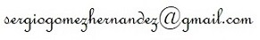

Estudios
Idiomas
Actividad profesional
Contacto
Estudios
- CFGS Administración y Finanzas (2006).

- Microgrado en Lógica, Historia y Filosofía de la Ciencia (2026).


• Curso de profesor de español lengua extranjera, Universidad Europea de Madrid (2017).


Idiomas
Inglés
• CAE C1 - Certificate in Advanced English, Cambridge Assessment English. Cambridge Assessment English es Miembro de Pleno Derecho de ALTE (Asociación de Examinadores de Lenguas en Europa).

Francés
• DALF C1 - Diplôme Approfondi de Langue Française, Centre international d'études pédagogiques (CIEP). El CIEP es Miembro de Pleno Derecho de ALTE (Asociación de Examinadores de Lenguas en Europa).

Alemán
• Goethe-Zertifikat B2, Goethe-Institut. El Goethe-Institut es la institución cultural de la República Federal Alemana. Miembro de Pleno Derecho de ALTE (Asociación de Examinadores de Lenguas en Europa), debe su nombre al poeta y erudito alemán Johann Wolfgang von Goethe.

Italiano
• PLIDA C2 - Progetto Lingua Italiana Dante Alighieri, Società Dante Alighieri. La Società Dante es una Institución Afiliada de ALTE (Asociación de Examinadores de Lenguas en Europa). Los exámenes PLIDA están reconocidos por tres ministerios italianos: el Ministerio de Educación, Universidad e Investigación, el Ministerio del Interior y el Ministerio de Trabajo y Asuntos Sociales, además de contar con la aprobación científica de la Universidad de Roma La Sapienza.

Euskara
• HABE A2 - HABE (Helduen Alfabetatze eta Berreuskalduntzerako Erakundea) es una entidad dependiente del Gobierno Vasco que trabaja en la enseñanza de la lengua vasca a adultos. HABE es Miembro de Pleno Derecho de ALTE (Asociación de Examinadores de Lenguas en Europa).

Actividad profesional


Sergio es un profesor que sabe detectar en todo momento las necesidades didácticas del estudiante y tiene un gran dominio de la lengua francesa, por lo tanto pudo resolver y corregir muchos de mis fallos. Además, pudo prepararme para una entrevista de trabajo de la cual salí con éxito. En el tiempo que estuvimos dando clases juntos, pude comprobar que Sergio es un excelente profesional y un gran apasionado de las lenguas. (Pablo)
Muy buen profesor, muy agradable, con disponibilidad y se amolda a tus necesidades. Recomendable 100% (María del Mar)
Contacto
Puedes escribirme a la dirección:
